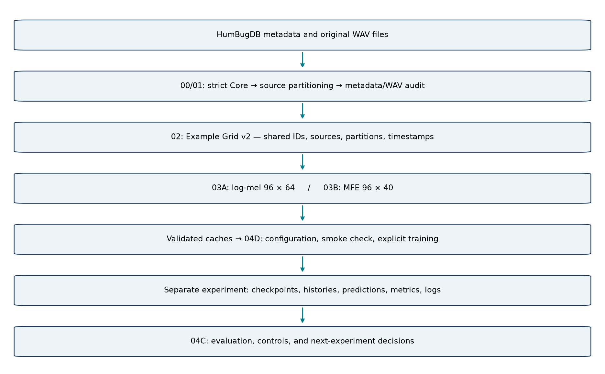
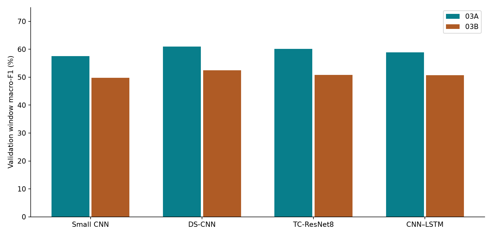
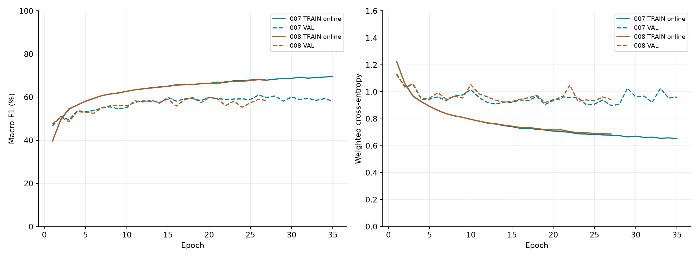

This project investigates acoustic classification of four mosquito taxa using compact models for Edge AI. Rather than starting with a large model or optimizing a single aggregate score, the team established a traceable workflow: selecting data from a HumBugDB release, partitioning original recordings before window extraction, validating window geometry and features, comparing two frontends on the same population, and conducting controlled training experiments. Each run has a unique identifier, configuration, checkpoint, training history, predictions, confusion matrix, and records of its code version, runtime, and inputs.
The current Core contains 1,898 clips from 1,189 source recordings. Example Grid v2 produces 32,645 windows: 22,613 TRAIN, 4,937 validation, and 5,095 TEST. Both branches share identifiers, labels, timestamps, and partitions. Branch 03A uses a VGGish-style reference log-mel transform with a tensor; 03B uses the pinned Edge Impulse Python MFE implementation with a tensor. Small CNN, DS-CNN, TC-ResNet8, and CNN-LSTM are trained from scratch.
Performance did not improve monotonically. A lower learning rate did not improve the strongest model; normalization using TRAIN statistics benefited some configurations; and weaker class weighting changed the minority-class precision–recall trade-off. The highest observed single-window result was obtained by exp007: DS-CNN/03A with 6,244 parameters, Adam learning rate 0.001, TRAIN-global z-score normalization, class-weight exponent 0.75, no augmentation, and zero weight decay. It achieved validation Window macro-F1 of 60.97%, Source macro-F1 of 74.89%, and TRAIN-eval macro-F1 of 74.31%. Neither the weight decay tested in exp008 nor the time masking tested in exp010 surpassed this configuration.
Exp009 did not train a new model. Averaging probabilities from two consecutive windows within the same clip increased macro-F1 from 61.32% on the retained single windows to 64.90% on 2,389 pairs, using 1.935 seconds of audio. The improvement was 3.58 percentage points, with a 95% source-bootstrap interval of [2.22, 4.85] points. This supports further development of fixed-duration aggregation, but is not a single-window result and should not be compared with the original model as if both had the same latency.
The report retains exp007 as the reference configuration and exp009 as an aggregation option supported by validation results. Remaining limitations include the small number of Squamosus sources, source and acquisition variability, repeated tuning on the same validation set, a single training seed, and the absence of independent deployment-domain evaluation. Historical baseline TEST results were previously reported; development experiments exp002–exp010 did not evaluate TEST. The validation scores are therefore not presented as confirmed final generalization results.
VGU · Edge AI · Week 5 · Initial baseline experiments
This web edition reproduces the existing first experimental report, including exp001–exp010 and its appendices. Weeks 1–4 were the proposal stage.
This report draws on the current source code, frozen manifests and audits, experiment configurations, saved notebook outputs, and analysis artifacts available as of October 3, 2026. Preparation involved reading these records only: no training, checkpoint inference, feature regeneration, relabelling, or repartitioning was performed. Tables distinguish three evaluation units: windows, two-window pairs, and source recordings. Unless explicitly labelled as accuracy, precision, or recall, percentages in metric tables denote macro-F1; differences are expressed in percentage points.
Verification coverage differs between experiments. Exp001 has baseline records; exp002–006 were checked against preserved notebook outputs, supplemented by prediction audits for selected models in exp004–007. Complete artifacts for exp007 and exp008 were downloaded for analysis, covering 16 runs, histories, predictions, confusion matrices, configurations, logs, and checkpoint hashes. Exp009 has diagnostic output in 04C and a specified bootstrap procedure. Exp010 is represented by its saved 04D results table; per-class metrics and learning-curve behaviour are not inferred where the relevant artifacts were unavailable for review.
University, course, instructor, and team details were supplied by the team. The faculty designation follows the template: Faculty of Engineering – Computer Science Program. No logo, signature, or unconfirmed individual contribution statement was fabricated. AI tools assisted with reviewing records, organizing the argument, and drafting LaTeX; scientific results originate from the project’s experimental records, not AI-generated data. The team should review and verify the report and remains responsible for its content before submission.
Mosquito wingbeat sounds provide a signal that can be studied using acoustic sensors and machine-learning models. For an Edge AI project, a high score alone is insufficient: the pipeline also requires a manageable model size, clearly specified features, documented data provenance, and meaningful evaluation. This phase establishes the AI foundation before assessing on-device deployment. Deferring ESP32 implementation helps distinguish recognition errors from frontend conversion, quantization, or hardware-runtime errors.
The main questions are which frontend and compact architecture best distinguish four mosquito taxa in source-partitioned recordings, which preprocessing and training changes are beneficial, and whether observing an adjacent audio interval improves decisions. These questions are examined through a controlled 03A–03B comparison, a series of ablations with explicit reference conditions, and a probability-aggregation diagnostic.
Inputs are clips with metadata sound_type=mosquito,
plurality=Single, and one of the four selected labels. Each
context is transformed into a time–frequency tensor. The model returns
four logits, and softmax produces the probability vector
.
The single-window decision is
Ara denotes An.
arabiensis, Fun denotes An. funestus s.s., Squ denotes
An. squamosus, and Cpx denotes Culex pipiens complex.
Since one label is a species complex, the task is more accurately
described as classification of four taxa or taxonomic groups than of
four fully resolved species.
This is a closed-set, single-label classification task. The metadata value “Single” restricts recording plurality; it does not establish that every window contains clear wingbeats or has comparable SNR. The pipeline has no background/noise label, unknown class, rejection mechanism, or “no mosquito” output. It should therefore not be interpreted as a mosquito detector for arbitrary environmental audio. Multi-label swarm detection, mosquito counting, and field population surveys are also outside the evaluation reported here.
The completed objectives were to establish a reproducible data foundation, compare two frontends on identical windows, train compact models under a declared budget, preserve and verify results by experiment, and identify a suitable development configuration. From protocol v2 onward, the primary criterion is validation Window macro-F1 at the selected checkpoint. Source macro-F1, per-class precision/recall/F1, TRAIN-eval, and confusion matrices provide supporting evidence; they do not replace the primary criterion after results are observed.
The longer-term objective is an Edge AI model. A low parameter count identifies a potentially small model footprint, but does not demonstrate operator compatibility, peak RAM, latency, energy use, or INT8 accuracy on ESP32. Likewise, a source-level validation score of 70–80% does not imply 70–80% single-window F1 or successful mosquito detection under deployment conditions.
| Term | Meaning in this project |
|---|---|
| Core | Dataset subset with membership selected and frozen using metadata. |
| Source / clip / window | Original recording / labelled metadata segment / short context used to construct an example. |
| Frontend / feature | Waveform-to-time–frequency transform / resulting feature tensor. |
| Cache | Precomputed, validated features retained for reuse during training. |
| Epoch / checkpoint | One pass through TRAIN / model state saved during training. |
| Loss / macro-F1 | Training objective / equally weighted four-class metric used for checkpoint selection. |
| Ablation / control | Experiment changing one principal factor / corresponding reference configuration. |
| Seed / runtime | Declared initial random state / software and hardware execution environment. |
| Validation / TEST | Development and selection partition / final-evaluation partition under the protocol. |
| Aggregation / pp | Combining probability vectors / percentage points, distinct from relative percentage improvement. |
The project uses HumBugDB metadata release
neurips_2021_zenodo_0_0_1.csv, containing 9,295 rows in the
local copy. HumBugDB provides mosquito audio and metadata for
classification and event detection; its paper and repository document
provenance [1, 2]. The local audio collection described in the
provenance records contains 2,694 WAV files, of which the experimental
Core selects 1,898 clips. These counts describe three different
populations, not inconsistent counts of the same set.
The Core was reconstructed using explicit filters:
sound_type=mosquito, plurality=Single,
sample_rate=44100, and species restricted to
four predefined labels. Membership was checked against canonical files
using exact identifiers and metadata; samples were not reselected
according to prediction outcomes. The four classes provide a tractable
setting for studying imbalance and taxonomic confusion within a shared
recording framework while limiting initial development complexity.
The filters reduce variation in plurality and sample rate but do not balance source counts, equalize capture methods, guarantee high SNR, or biologically revalidate labels. All current Core records specify Telinga microphones, Tascam recorders, and Tanzania/Morogoro/Kilombero District geography. These are observed Core properties, not additional filters or evidence of transfer to an ESP32 microphone in Vietnam.
| Label | Clips | Sources | Total duration (seconds) |
|---|---|---|---|
| An. arabiensis | 831 | 514 | 14,815.20 |
| An. funestus s.s. | 381 | 248 | 7,414.24 |
| An. squamosus | 141 | 91 | 2,091.80 |
| Culex pipiens complex | 545 | 336 | 8,157.76 |
| Total | 1,898 | 1,189 | 32,479.00 |
The name field identifies an original recording,
id identifies a labelled metadata clip, and
example_uid identifies a grid window. One source may
contain several clips and many windows. Thousands of windows do not
constitute thousands of independent recordings or individuals. This
distinction underlies partitioning, prediction aggregation, and
source-based uncertainty estimation.
Grouping by source name prevents related clips and windows from crossing partitions. It does not establish independence of mosquito individuals, recording sessions, or all acquisition factors. The exp007/008 analysis records show 41 recording dates shared across all three partitions. The benchmark is therefore source-name-disjoint within the Core, rather than session-held-out, date-held-out, or cross-domain.
Squ has only 91 sources across the Core, compared with 514 for Ara; TRAIN contains 63 and 359, respectively. This disparity makes macro-F1 and per-class metrics necessary alongside accuracy. The project retains the observed Core distribution rather than duplicating samples or removing majority-class data to produce a superficially balanced table.
Core metadata contain 1,226 LT clips, 669 HBN clips, and 3 LC clips. HBN denotes human-baited nets, LT light traps, and LC larval collections [1]. These describe capture methods, not measured noise labels; HBN and LT should not automatically be treated as distinct SNR domains. Table 3 shows associations between species and method: TRAIN Squ sources are exclusively LT. This presents a confounding and coverage limitation.
| Label | HBN | LT | LC | Total |
|---|---|---|---|---|
| Ara | 113 | 246 | 0 | 359 |
| Fun | 33 | 140 | 0 | 173 |
| Squ | 0 | 63 | 0 | 63 |
| Cpx | 116 | 118 | 1 | 235 |
The reproducible procedure partitions sources within each species, targeting 70% TRAIN, 15% validation, and the remainder TEST, with seed 42. It also records source encounter order, species order, and the global RNG. Thus, “random split, seed 42” alone is insufficient to reproduce exact assignments. Clip and window proportions need not equal 70/15/15 because sources differ in duration and clip count.
Notebook 00 reconstructs the Core and split in memory and checks them
against accepted files and reproduction records.
WRITE_CANONICAL=False prevents canonical artifacts from
being rewritten during routine checks. Notebook 01 independently
validates required metadata, exact parent mappings, source isolation,
and all WAV headers and durations. Nullable release fields, such as
recording date, are not turned into arbitrary exclusion criteria.
| Unit | TRAIN | Validation | TEST | Total |
|---|---|---|---|---|
| Source | 830 | 177 | 182 | 1,189 |
| Clip | 1,335 | 269 | 294 | 1,898 |
| Window | 22,613 | 4,937 | 5,095 | 32,645 |
| Label | TRAIN | Validation | TEST |
|---|---|---|---|
| Ara | 10,457 (359) | 2,220 (77) | 2,232 (78) |
| Fun | 5,128 (173) | 1,120 (37) | 1,239 (38) |
| Squ | 1,426 (63) | 295 (13) | 371 (15) |
| Cpx | 5,602 (235) | 1,302 (50) | 1,253 (51) |
The audit confirms 1,898 unique Core IDs and 1,189 sources, no source-name leakage, and complete WAV availability. All Core files are 44.1 kHz mono PCM24, with metadata-duration discrepancies no greater than 10 ms. Reconstructed split assignments match the canonical records. Manifests, partitions, and WAV inventories are bound by SHA256 before feature extraction.
A technical PASS means that files, geometry, metadata, and byte identities satisfy the contract. It does not prove biological label correctness, clear mosquito activity in every window, session independence, or the absence of perceptually similar recordings. Inventory hashes reveal no exact duplicate WAV files, but byte-level checks do not replace signal-overlap or individual/session-independence analysis.
Partitioning before window extraction is deliberate. Randomly splitting windows after segmentation can place neighbouring wingbeats and background sounds from the same source in both TRAIN and validation. The current pipeline prevents this at source-name level. Future dataset, segmentation, or frontend changes require a new version; existing partitions must not be changed merely to improve scores.
SciPy reads native PCM24 audio as left-justified int32 values, which
are divided by
to obtain float64. Both frontends resample entire clips from 44,100 to
16,000 Hz using resample_poly, ratio
,
Kaiser parameter 5.0, and zero-valued constant boundary extension. The
target length is
Resampling before
extracting contexts defines a common target sample sequence. The frozen
waveform preprocessing applies no peak/RMS normalization, denoising,
silence removal, or activity gate. Constant extension within the
resampler is not completion padding for examples lacking a full
context.
Notebook 02 uses a float32 path to validate geometry, finite support, and expected resampled length. It does not supply feature-input waveforms to 03A/03B and is not claimed to be bitwise equivalent to their float64 path. These distinct purposes separate geometric validation from stronger claims of numerical parity.
Each example starts at sample . The reference context contains 15,600 samples, or 0.975 seconds at 16 kHz. With a 400-sample frame and 160-sample hop, the number of complete frames is A 15,360-sample stride corresponds to 0.96 seconds. Adjacent contexts share 240 samples, or 15 ms, although their reference feature-frame groups do not repeat frame starts. The audio contexts are therefore not entirely non-overlapping.
| Property | Value and interpretation |
|---|---|
| Target sample rate | 16,000 Hz |
| Example stride | 15,360 sample = 0.96 s |
| Reference context | 15,600 sample = 0.975 s |
| Example ID | gridv2_<clip_id>_e<index> |
| Eligibility | Complete contexts only; no completion padding |
| Shared population | 32,645 frozen IDs, labels, sources, partitions, and starts |
| Excluded historical terminal examples | 319 examples lacking full reference contexts |
| Activity filtering | None; no energy- or prediction-based exclusion |
Although 03B uses shorter frames, it reads the same reference contexts and example IDs. No additional terminal windows are admitted merely because MFE can process a shorter context, and neither branch independently removes weak or zero-valued features. Model differences are therefore not confounded with population differences.
The reconstructed grid matches the accepted manifest exactly. All
32,645 contexts were checked physically, with matching parent metadata,
UIDs, ordering, and starts. The historical filename
core_example_grid_v2_stride15360_ref15600_candidates.csv is
retained; “candidates” does not indicate pending acceptance. A separate
audit records ACCEPTED_FROZEN, while the original
generation audit is preserved.
03A divides each context into 96 frames, using a 400-sample periodic Hann window (25 ms), 160-sample hop (10 ms), 512-point FFT, and unnormalized magnitude spectrum. The mel filterbank has 64 bands spanning 125–7,500 Hz, followed by natural-log compression with offset 0.01: The frontend produces a float64 tensor. Training uses float32 model buffers under a separate contract; this conversion does not regenerate the frontend or cache. TRAIN-global z-score normalization is likewise fitted preprocessing within the training configuration, not a change to the frozen log-mel transform.
The reference mel_features.py is pinned and checked for
numerical parity on identical 16 kHz contexts. Verification is limited
to feature-transform parity within that scope. The project uses no
pretrained VGGish embeddings, does not retrain the original HumBugDB
model, and does not reproduce the original benchmark’s complete
PCM16/resampy path.
03B uses the Python MFE branch from a pinned Edge Impulse revision
and its vendored SpeechPy fork. Explicit settings are 320-sample frames
(20 ms), a 160-sample hop, 40 filters, a 256-point FFT, and a 0–8,000 Hz
range. The implementation retains float32 casting, pre-emphasis 0.98
using np.roll, power-spectrum processing, dB/noise-floor
transformation, and quantization/dequantization. Output is a float32
tensor.
The 256-point FFT receives 320-sample frames, so this Python implementation truncates them. The first pre-emphasis sample depends on the last sample of the same context; rounding before uint8 casting also produces boundary wrap retained in reference regression checks. These behaviours are frozen for reproducibility, not silently corrected during training. C++/ESP32 and continuous-stream parity remain unverified; changing the behaviour requires new frontend and cache identifiers.
| Component | 03A | 03B |
|---|---|---|
| Context/start | Shared 15,600/15,360-sample grid | Same as 03A |
| Frame/hop | 400/160 sample | 320/160 sample |
| Window and FFT | Periodic Hann; FFT512 | Rectangular; FFT256 with truncation |
| Spectrum | Magnitude | Implementation-scaled power |
| Bands and range | 64; 125–7,500 Hz | 40; 0–8,000 Hz |
| Compression | Pinned dB/noise floor, Q/DQ | |
| Pre-emphasis | None | 0.98; per-context wrap |
| Tensor frontend | , float64 | , float32 |
| Noise floor | Not an MFE parameter | Project: dB; UI default: dB |
| Audit status | VERIFIED_FROZEN |
VERIFIED_FROZEN |
The project does not treat dB as the Edge Impulse default. Exploration on 128 class-balanced TRAIN examples was followed by full-TRAIN confirmation comparing and dB. The former produced 11 entirely zero tensors among 22,613 examples; the latter produced none. Neither had bins near the upper boundary under the specified diagnostic. The choice of dB is a limited TRAIN-based measure against feature collapse, not validation/TEST optimization or evidence of a globally optimal floor.
No windows were removed. The shared grid was retained, and the audit was written only after all gates passed. Shape/finiteness checks, synthetic and boundary cases, pinned-wrapper regressions, and real-TRAIN parity checks support implementation correctness; they do not predict model F1 before training.
03A outperformed 03B for all four models in exp007 and exp008, supporting its use in the current development configuration. The difference cannot be attributed solely to band count, Hann windowing, frequency range, or pre-emphasis, because these factors change together. It does not establish that every MFE configuration is inferior to every log-mel transform or that 03B cannot benefit from a different training configuration.
Small CNN provides a straightforward two-dimensional convolutional
baseline. DS-CNN factorizes convolution into depthwise and pointwise
operations to reduce parameters. TC-ResNet8 models temporal structure
with frequency bins as input channels. CNN-LSTM adds temporal recurrence
after convolution. Compact DS-CNN and temporal convolution have
precedents in keyword spotting [4, 5]; the project uses the specific
architectures documented in model_zoo.py, rather than
claiming exact reproduction of the published models.
| Model | Main structure | Params 03A | Params 03B |
|---|---|---|---|
| Small CNN | Conv channels 16/32/64; pooling; global mean; Linear4 | 23,668 | 23,668 |
| DS-CNN | Stem 32; 4 depthwise/pointwise blocks; global mean; Linear4 | 6,244 | 6,244 |
| TC-ResNet8 | Temporal Conv1d; channels 16/24/32/48; 3 residual blocks | 65,940 | 64,788 |
| CNN-LSTM | Conv 16/32; frequency mean; LSTM hidden 32; last state | 13,428 | 13,428 |
Models use ReLU, implementation-specific BatchNorm, head dropout 0.2, and PyTorch initialization from scratch. No pretrained backbone, oversampling, or transfer-learning embedding is introduced between experiments. Global pooling makes most parameter counts independent of frequency-bin count; the TC stem depends directly on frequency channels. The smallest model is not inherently best, but DS-CNN achieved the highest exp007 score with over ten times fewer parameters than TC-ResNet8.
The suite comprises 03A/03B
four models, executed sequentially. Fixed settings are seed 42, batch
size 64, at most 50 epochs, patience eight, Adam, float32, no mixed
precision, and no pretraining. Adam uses betas (0.9, 0.999), epsilon
,
and a constant learning rate. TRAIN is shuffled; validation and TEST are
not. num_workers=0, and the final batch is retained.
Caches, partitions, and model definitions remain unchanged across
ablations.
Overrides are implemented through distinct protocol versions: v2 for checkpoint selection, learning rate, and normalization; v3 for square-root weights; v4 for the power exponent; v5 for Adam weight decay; and v6 for targeted TRAIN-only time masking. Earlier engines and configurations are preserved so that historical results remain traceable. Exp010 is an intentional single run, not an incomplete eight-model suite.
Class weights are fitted only from TRAIN window counts . With , , and exponent , Exp004 uses , exp006 uses , and exp007 uses . Weights are not calculated from validation/TEST or source counts. Under idealized full-epoch counting, total weighted mass is proportional to ; hence does not fully equalize class contributions. It provides an intermediate weighting strength, not an automatic solution to imbalance.
| Label | TRAIN windows | |||
|---|---|---|---|---|
| Ara | 10,457 | 0.540619 | 0.735268 | 0.630476 |
| Fun | 5,128 | 1.102428 | 1.049966 | 1.075877 |
| Squ | 1,426 | 3.964411 | 1.991083 | 2.809532 |
| Cpx | 5,602 | 1.009149 | 1.004564 | 1.006854 |
Reducing the Squ weight may reduce false positives at the expense of recall. Conclusions therefore consider more than macro-F1 or precision alone. Weighted validation loss also changes with class weights, so losses from exp004, exp006, and exp007 cannot be ranked directly as identical objectives. F1 comparisons retain the same labels and population, but the changed loss may alter the stopping epoch.
From exp004 onward, each frontend uses a scalar mean and standard deviation fitted over all TRAIN feature values. Validation and TEST, when evaluated, use the same TRAIN statistics: Normalization is neither per-example nor per-frequency-bin and is not fitted to the full dataset. For exp007 03A, and , fitted over 22,613 TRAIN examples and 138,934,272 scalar values. Statistics are computed in float64, then model tensors are converted to float32 in separate buffers. Read-only caches are not modified.
| Stage | Task | Outputs and downstream decisions |
|---|---|---|
| Stage | Task | Outputs and downstream decisions |
| Reproduce Core and exact source split | Matching membership and assignments; canonical writes disabled; frozen assignments retained. | |
| 01 | Audit metadata, sources, and WAV files | No source-name leakage; valid format/duration; technical checks do not authorize relabelling. |
| 02 | Validate Example Grid v2 | 32,645 complete contexts; shared UIDs/starts; 319 historical incomplete terminal examples excluded. |
| 03A | Reference log-mel parity | , verified/frozen; no pretrained VGGish embeddings. |
| 03B | Pinned MFE regression and TRAIN diagnostics | , noise floor ; shared population; deployment parity unconfirmed. |
| 04A | Log-mel model branch | Historical entry point for branch A; new experiments run through 04D without separate 04A retraining. |
| 04B | MFE model branch | Historical entry point for branch B; no alternative population or branch-A-incompatible cache. |
| 04C | Review by experiment name | Verification, tables, histories, confusion, and references; a separate exp009 section reads saved predictions on CPU. |
| 04D | Runtime setup, preflight, preview, and training | Clone/pull repository, mount Drive, check cache/CUDA; suite or targeted run saved separately; training explicitly enabled. |

The repository stores code, notebooks, configurations, tools,
environment definitions, and small manifests and contracts needed for
traceability. Drive stores audio, validated caches, baseline evidence,
and experiment outputs. The central path layer,
tools/project_paths.py, separates logical artifact identity
from physical location. LOCAL uses the local repository and a
configurable data root; COLAB uses a GitHub clone and
/content/drive/MyDrive/EdgeAI.
| Component | Location beneath the EdgeAI root |
|---|---|
| Raw WAV | fixed/raw/HumBugDB/ |
| Manifests and partitions | fixed/data/manifests/,
fixed/data/splits/ |
| Validated cache | fixed/data/stage04_cache/ |
| Immutable baseline | fixed/baseline/stage04/ |
| New experiments | experiments/<experiment_id>/ |
| New derived versions | derived/, following an
approved scientific change |
Colab must import tools from its own repository clone; opening a
notebook in local VS Code does not make a D:\... path
accessible to a remote kernel. Setup locates the repository, adds tools
to the import path, and mounts or configures Drive. A kernel that
imported older modules requires restarting after code updates. The
workflow does not depend on the directory name
.venv-stage04; it requires the specified packages rather
than a fixed Windows path.
Each experiment name creates a new directory. The runner rejects existing names, including FAILED or INTERRUPTED runs; retries use a different identifier to preserve logs and provenance. Configuration and metadata record the name, description, parent/reference, planned and completed runs, commit, runtime, seed, effective parameters, input identities, and artifact hashes. Testing exp008 or exp010 does not overwrite exp007 checkpoints.
Smoke checks cover the environment, CUDA when requested, cache
identity, and synthetic forward passes; they neither update models nor
evaluate F1. A full portability audit may be slow because it reads many
bytes, but does not improve training. Once fixed inputs have been
audited and remain unchanged, appropriate preflight checks are still
needed, but changing one training parameter does not require feature
regeneration or every full audit. Setting RUN_TRAINING=True
starts execution; it is not the default to commit to the repository.
Output guards and pinned hashes help prevent accidental writes to fixed raw data, caches, and baselines through project tools. They do not replace Google Drive permissions or protect against all external operations. Immutability is therefore a checked contract that must also be respected during manual data management.
For each class , , , and . Macro-F1 is the unweighted mean of the four class F1 scores. Undefined precision, recall, and F1 are set to zero under the protocol. Accuracy is weighted by window count, so strong Ara performance can obscure poor Squ performance. Confusion matrices and support are therefore considered alongside aggregate metrics.
TRAIN-eval uses the selected checkpoint in evaluation mode without augmentation. This differs from online TRAIN history, where dropout is active and weights change after each batch. Online TRAIN metrics cannot be compared directly with validation as the exact gap of a fixed checkpoint. The reported gap is TRAIN-eval macro-F1 minus selected validation macro-F1.
The window endpoint comprises 4,937 validation decisions. The source
endpoint averages softmax probabilities over all windows sharing a
name, then applies argmax to obtain one decision per
source:
Validation contains 177
sources. Windows per source vary, and aggregation may span several
labelled clips. Source F1 of 74.89% therefore describes multiple
observations over variable durations. It is neither 74.89% accuracy nor
evidence that a 0.975-second model achieves 74.89% F1.
Exp001 retains baseline selection by minimum weighted validation loss. From exp002 onward, the selected checkpoint maximizes validation macro-F1, with ties resolved in favour of the earliest epoch; both best-loss and best-F1 checkpoints are saved. Early stopping still monitors weighted validation loss with patience eight. Consequently, the best-F1 checkpoint may follow the best-loss epoch, and stopping may truncate a trajectory whose F1 is still improving. This is a declared trade-off, not automatically an implementation error.
DS-CNN/03A selects epoch 26 of 35 in exp007 and epoch 20 of 27 in exp008; the saved exp010 table reports epoch 13. Exp007 TC-ResNet8 reaches its best F1 at the final epoch, 17, motivating a stopping-monitor diagnostic if that model is revisited. Increasing the epoch limit does not necessarily improve F1, since most runs stop before 50 epochs because of patience.
Historical baseline and exp001 TEST metrics were previously reported. Exp002–008 and exp010 use validation-only development; exp009 reads validation predictions rather than TEST. Although TEST does not select checkpoints under the current protocol, earlier exposure to its results must be disclosed. The report cannot establish that those historical results never influenced human decisions.
Repeated tuning on the same validation set introduces selection bias. One seed, 42, and one fixed split do not establish robust improvement. The configuration should be frozen, confirmed using prespecified seeds, and followed by planned final evaluation. If historical TEST results influenced tuning, a clean confirmatory claim requires a genuinely independent session, individual, or domain holdout; reshuffling existing clips does not resolve this issue.
Windows from the same source are correlated, so uncertainty for fixed predictions is estimated by resampling source blocks rather than treating 4,937 windows as independent replicates. The exp007/008 and exp009 analyses use 4,000 class-stratified paired resamples with seed 20261002. Intervals describe sampling uncertainty conditional on existing predictions; they do not cover training seeds, repeated tuning, checkpoint selection, or dependencies among sources from the same session. A positive validation interval is not evidence of deployment performance or confirmed TEST improvement.
Each training experiment from exp001 to exp008 includes eight configurations. Exp009 is a diagnostic without training, and exp010 runs only DS-CNN/03A. Thus, ten experimental milestones do not mean ten independent models or ten eight-model suites. Table 12 records the principal changes, observations, subsequent decisions, and results. Full model matrices in Appendix A retain results beyond the best-performing run.
| Stage | Change / reference | Observations | Next decision | Main result |
|---|---|---|---|---|
| Stage | Change / reference | Observations | Next decision | Main result |
| Exp001 | Baseline: LR 0.001, no normalization, inverse weights, loss selection. | Eight runs complete; loss selection does not directly maximize the primary metric. Historical TEST results viewed. | Select by validation macro-F1; add TRAIN-eval, per-class, and source diagnostics; disable TEST during tuning. | Best selected VAL: CNN-LSTM/03A 54.82%, not TEST F1. |
| Exp002 | Protocol v2; best-F1 selection, loss stopping retained. | Best 54.82%; TC/03A weak and learning unstable. | Reduce only LR from 0.001 to 0.0003, using exp002 as control. | DS/03A 54.10%; best suite result CNN-LSTM/03A 54.82%. |
| Exp003 | LR 0.0003, no normalization; control exp002. | TC/03A recovers, but suite maximum does not increase; DS/03A declines slightly. | Test TRAIN-global z-score at LR 0.001 to separate normalization from LR. | Best DS/03A 53.66%; TC/03A 53.30%. |
| Exp004 | TRAIN-global z-score, LR 0.001; control exp002. | TC/03A improves substantially; 03B gains are inconsistent; Squ has many FP. | Test lower LR with normalization, then audit TRAIN/predictions if the plateau remains. | TC/03A 60.38%; DS/03A 56.16%, Source 67.45%. |
| Exp005 | Normalization retained; LR 0.0003; control exp004. | Small CNN improves; DS nearly unchanged; TC declines; suite mean nearly unchanged. | Retain LR 0.001; weaken class weights given Squ false positives. | Best Small/03A 56.67%; DS/03A 56.02%. |
| Exp006 | Weight exponent ; normalization/LR retained; control exp004. | Window F1 increases in 7/8 runs, but Squ recall declines in all eight; DS Squ recall . | Test exponent 0.75 without changing models, splits, or LR. | DS/03A 59.92%, Source 72.20%; minority-class trade-off remains unsatisfactory. |
| Exp007 | Exponent 0.75; normalization/LR retained; compare exp004/006. | DS/03A leads; Squ F1 recovers; source gains are substantial but TRAIN–VAL gap remains. | Audit TRAIN signals and test mild weight decay without multiple simultaneous changes. | DS/03A Window 60.97%, Source 74.89%; 6,244 parameters. |
| Exp008 | Adam weight decay ; control exp007. | Window F1 improves in 3/8 runs and Source F1 in 2/8; DS declines. Metric/hash audits do not support a pipeline-wide fault. | Retain exp007; test two-window aggregation using saved predictions, without retraining. | DS/03A 59.90%, Source 73.28%; no improvement over exp007. |
| Exp009 | Mean softmax of two consecutive within-clip windows from exp007; predefined endpoint. | Retained singles 61.32% versus pairs 64.90%; all four class F1 scores improve; 1.935 s audio required. | Retain aggregation as a separate option; test mild time masking for single-window improvement. | +3.58 pp, source CI [2.22, 4.85]; 2,389 pairs; no training. |
| Exp010 | One DS/03A run; TRAIN mask probability 0.5, width 1–8 frames; exp007 otherwise retained. | Window, Source, and TRAIN-eval decline. The summary table does not establish the mechanism. | Retain exp007; inspect exp010 histories/per-class results; small-TRAIN fit probe remains proposed. | Window 55.35%, Source 68.50%, TRAIN 66.36%; TEST False. |
Exp001 established that the complete suite could run and preserve results. However, minimum weighted loss and maximum macro-F1 did not coincide. Initial loss-based selection aligned with cross-entropy optimization but not directly with the four-class macro criterion. Exp002 selected by validation macro-F1 while retaining loss-based stopping, models, and data. This clarified the protocol without assuming that revised selection must improve the suite maximum.
CNN-LSTM/03A led both selected-validation tables at 54.82%. DS-CNN/03A increased from 52.13% in exp001 to 54.10% in exp002. These were separate executions under different selection procedures, not a relabelling of one checkpoint. From exp002, TRAIN-eval and source diagnostics were also saved to support analysis of underfitting, generalization, and class trade-offs. Exp001 TEST F1 is not ranked against later validation F1.
Exp003 tested whether LR 0.001 was too high for some architectures. Only LR was reduced to 0.0003, without normalization, using exp002 as control. TC-ResNet8/03A improved from 40.64% to 53.30%, but DS/03A declined from 54.10% to 53.66% and CNN-LSTM/03A from 54.82% to 51.67%. The suite maximum therefore did not exceed exp002.
The effect depended on the architecture; it does not establish that lower LR is generally unsuitable or higher LR generally preferable. The next step tested normalization at LR 0.001 against exp002, rather than changing LR and input scale simultaneously.
Exp004 retained LR 0.001 and added TRAIN-global z-score normalization. TC-ResNet8/03A increased from 40.64% to 60.38%, DS/03A from 54.10% to 56.16%, and CNN-LSTM/03A reached 55.95%. Small CNN/03B declined relative to exp002, however, and 03B gains were inconsistent. Normalization was retained for the 03A development direction, without claiming a universally effective frontend intervention.
Prediction and confusion review revealed many Squ false positives: DS/03A precision 26.95%, recall 67.80%, F1 38.57%, with 200 TP and 542 FP. This motivated examination of the weighted-CE trade-off. Before changing weights, exp005 tested a lower LR with normalization to investigate the interaction between input scale and optimization.
Exp005 used the exp004 normalization and LR 0.0003. Small CNN/03A improved from 54.18% to 56.67%, and Small CNN/03B from 46.48% to 51.15%. TC/03A declined from 60.38% to 56.04%, while DS/03A was nearly unchanged at . The eight-run mean decreased by approximately 0.05 points; this is a configuration summary, not an ensemble score.
More epochs did not ensure better validation performance: DS selected epoch 43 but reached only 56.02% Window F1, with TRAIN-eval 68.28%. The team retained LR 0.001 for subsequent ablations rather than selecting a universal LR from the Small CNN gains. TRAIN signal and prediction audits examined imbalance and source effects before expanding the search.
Exp006 changed the weight exponent from to , using exp004 as control. Window F1 increased in seven of eight runs; DS/03A reached 59.92% and Small/03A 59.20%. Squ recall nevertheless declined in every configuration. For DS/03A, Squ TP changed , FP , and FN . Precision increased , but recall fell and F1 .
A macro-F1 increase driven by other classes does not establish that imbalance has been resolved. Correct Squ sources fell from 11/13 to 6/13. The next experiment tested exponent 0.75 as an intermediate trade-off, retaining LR, normalization, architecture, seed, partitions, and caches. Oversampling and alternative losses were not introduced simultaneously.
With , DS-CNN/03A achieved Window F1 60.97% and Source F1 74.89%. Squ precision was 38.40%, recall 48.81%, F1 42.99%, and 9/13 sources were correct. Compared with exp006, three Squ sources were recovered; Window macro-F1 increased 1.06 points and Source F1 2.69 points. Total correct sources remained 135/177 because gains in some classes coincided with losses in others. Window accuracy declined slightly while macro-F1 increased, illustrating their different weighting.
Window F1 improved 4.82 points over DS/03A exp004, but only 0.60 points over the exp004 suite leader, TC/03A. These comparisons answer different questions. The paired source-bootstrap interval comparing DS exp006 with exp007 includes zero. Exp007 is therefore the best observed development candidate, not a model proven superior across seeds.
The post-exp007 TRAIN audit examined 30 sources—15 repeatedly incorrect and 15 matched correct controls—covering 43 WAV files and 484 windows. No digital zeros, clipping, or cache collapse were found in the sample. Some incorrect sources were weak, but others were stronger than their controls. The team therefore did not remove windows, relabel samples, or alter waveforms according to predictions. The 13.34-point TRAIN-eval–VAL gap still motivated mild regularization in exp008.
Exp008 added only Adam weight decay to exp007. This is coupled L2 regularization in Adam, not AdamW. DS/03A Window F1 declined from 60.97% to 59.90% and Source F1 from 74.89% to 73.28%. Small CNN/03A gained 1.29 points, but only 3/8 Window and 2/8 Source scores improved. The paired bootstrap interval for the DS Window difference of points was at 95%.
The result does not support retaining this weight decay in the selected configuration. It does not establish that regularization is universally ineffective: only one strength, configuration, and seed were tested. Detailed metric, configuration, history, prediction, and hash review found no inconsistency explaining the plateau through artifact corruption. The team then tested temporal evidence aggregation in exp009, using a CPU diagnostic before repeating an expensive suite.
Exp009 averages saved validation softmax probabilities for two adjacent windows within each clip, using exp007 DS/03A. It does not reread audio or caches for inference and uses neither GPU nor optimizer. Population, tail exclusions, and source grouping are described in Section 11.
Macro-F1 increased from 61.32% on matched single windows to 64.90% on pairs, with improvement in all four per-class F1 scores. This is consistent with incomplete or unstable evidence in some windows and a benefit from aggregation. It does not show that all source errors arise from insufficient duration: unrestricted source aggregation is a different endpoint, and some sources remain repeatedly incorrect. Exp009 was retained as a separate output option, while time masking was tested for single-window improvement.
Exp010 trained only DS/03A to limit cost and test one hypothesis. It retained exp007 and added a TRAIN-only mask with probability 0.5: one mask spanning 1–8 time frames across all frequencies, filled with zero after TRAIN-global z-score normalization. Masking uses private tensor copies and does not modify caches. Validation and TRAIN-eval are unmasked. The augmentation generator uses seed 42 independently of model and shuffle RNGs.
The saved 04D table reports selected epoch 13, weighted validation loss 0.956628, Window macro-F1 55.35%, Source F1 68.50%, TRAIN-eval 66.36%, and TEST False. Relative to exp007, the three F1 scores fell by 5.62, 6.39, and 7.96 points. A smaller gap is not an improvement when validation also deteriorates. These results justify rejecting the tested configuration as the current reference, but do not establish whether masking obscured wingbeats, caused underfitting, interacted with early stopping, or exposed another training issue without further history, per-class, and log review. Missing metrics are not inferred.
Exp007 already combines 03A/DS-CNN, TRAIN-global normalization, best-F1 checkpoint selection, LR 0.001, and exponent 0.75. Exp009 uses that checkpoint and adds two-window aggregation. This is the currently supported combination; another training run is not required merely to rename it “all improvements”.
A lower LR benefited some Small CNN runs but not DS/03A; the tested weight decay and time masking reduced DS/03A performance. The three changes were therefore not combined. Effects depend on the model and training configuration, and components may interact. Individually beneficial changes do not necessarily remain beneficial together; retaining negative results explains the final choice.
| Frontend | Model | Params | Epoch | VAL Window | VAL Source | TRAIN eval |
|---|---|---|---|---|---|---|
| 03A | Small CNN | 23,668 | 26 | 57.57 | 73.04 | 66.51 |
| 03A | DS-CNN | 6,244 | 26 | 60.97 | 74.89 | 74.31 |
| 03A | TC-ResNet8 | 65,940 | 17 | 60.17 | 72.16 | 75.59 |
| 03A | CNN-LSTM | 13,428 | 24 | 58.85 | 68.28 | 64.36 |
| 03B | Small CNN | 23,668 | 8 | 49.77 | 60.01 | 54.94 |
| 03B | DS-CNN | 6,244 | 20 | 52.52 | 62.50 | 63.50 |
| 03B | TC-ResNet8 | 64,788 | 7 | 50.80 | 60.68 | 61.46 |
| 03B | CNN-LSTM | 13,428 | 9 | 50.72 | 60.09 | 54.49 |
03A outperformed 03B for every model in this experiment. DS-CNN/03A achieved the highest Window and Source F1 despite having the fewest parameters. Small CNN approached its Source F1 but had lower Window F1; TC approached its Window F1 with many more parameters. DS is selected on development performance and parameter footprint, not established INT8 performance or measured latency.

| Label | Windows | P | R | Window F1 | Sources | Source F1 |
|---|---|---|---|---|---|---|
| Ara | 2220 | 69.66 | 73.83 | 71.68 | 77 | 79.22 |
| Fun | 1120 | 72.82 | 65.54 | 68.98 | 37 | 79.41 |
| Squ | 295 | 38.40 | 48.81 | 42.99 | 13 | 69.23 |
| Cpx | 1302 | 62.78 | 57.91 | 60.25 | 50 | 71.70 |
| True / Predicted | Ara | Fun | Squ | Cpx |
|---|---|---|---|---|
| Ara | 1639 | 92 | 147 | 342 |
| Fun | 309 | 734 | 10 | 67 |
| Squ | 97 | 16 | 144 | 38 |
| Cpx | 308 | 166 | 74 | 754 |
Ara–Cpx confusions numbered 342 and 308 windows in the two directions; 309 Fun windows were predicted as Ara. Squ had 144 TP, 231 FP, and 151 FN. Both false positives and false negatives remain, so increasing its weight or prediction frequency cannot automatically resolve both. One Squ validation source represents percentage points of source recall; the small support requires caution when interpreting source-level scores.
Source aggregation achieved macro-F1 74.89%, with 135/177 sources correctly classified. Per-class Source F1 was approximately 79.22% for Ara, 79.41% for Fun, 69.23% for Squ, and 71.70% for Cpx. This is a different endpoint: combining windows improves the source decision without changing individual-window scores. The 74.89% result should not be presented alone as “model accuracy”.

Histories record learning at every epoch rather than only the final result. The exp007 checkpoint selected at epoch 26 has TRAIN-eval F1 74.31% and validation F1 60.97%. The 13.34-point gap is consistent with limited generalization. However, TRAIN-eval is not near 100%, and some TRAIN sources remain repeatedly incorrect, so overfitting is not the only possible explanation. Lower online TRAIN F1 can reflect dropout and changing checkpoints rather than a metric implementation error.
Exp008 reduced the gap to approximately 11.93 points but also reduced Window F1. Exp010 reduced the gap to 11.01 points while Window F1 declined substantially. A smaller gap with weak performance on both sets is not preferable to higher validation performance. The objective is to improve the predefined endpoint while monitoring class trade-offs, not minimize the gap regardless of scores.
Windows are sorted by example_index within each labelled
clip id and paired as
.
UIDs, sources, labels, partitions, starts, and continuity are checked.
Pairs never cross clip boundaries, even within the same source, or gaps.
Each window belongs to one pair. Predictions use argmax of mean softmax
probabilities, with ties resolved by the lowest class index.
Two contexts span
seconds, including 15 ms of shared audio. This is the required
observation duration, not measured hardware inference latency. The final
window of an odd-length sequence is excluded and recorded in
excluded_windows.csv. Of 4,937 validation windows, 159 are
excluded; the remaining 4,778 form 2,389 pairs, retaining all 177
sources and 269 clips.
| Endpoint | Decisions | Macro-F1 (%) | Accuracy (%) |
|---|---|---|---|
| Full validation, single windows | 4,937 | 60.9748 | 66.2548 |
| Matched single windows | 4,778 | 61.3245 | 66.6178 |
| Two-window pairs | 2,389 | 64.9010 | 69.9456 |
The primary comparison uses the same retained audio but different decision counts and evaluation units. The 3.93-point difference between 60.97% and 64.90% is not the primary aggregation effect: approximately 0.35 points reflect the population change after tail exclusion. The defined effect is points. Decisions remain dependent within sources, and the small context overlap is retained and disclosed.
| Label | Single F1 (%) | Pair F1 (%) | Difference | 95% CI |
|---|---|---|---|---|
| Ara | 72.02 | 74.86 | 2.83 | [1.56; 4.10] |
| Fun | 69.32 | 72.67 | 3.35 | [1.50; 5.19] |
| Squ | 43.37 | 48.16 | 4.79 | [0.70; 8.24] |
| Cpx | 60.59 | 63.91 | 3.33 | [1.42; 5.22] |
The macro-F1 difference is 3.5765 points, with a 95% source-bootstrap interval of [2.2220, 4.8548]. This is exploratory evidence for fixed-duration aggregation of a validation-selected checkpoint; it does not cover seed variability or repeated tuning. Every class improved, including Squ from 43.37% to 48.16% on the matched population, although its score remained below those of the two larger classes.
Exp009 shows that additional observations can improve decisions without increasing parameter count. However, the 1.935-second observation requirement must be considered against future product needs; latency and energy have not been measured. Unrestricted-duration Source F1 cannot substitute for this experiment. Repeatedly optimizing aggregation length on the same validation set would also prevent interpreting the resulting interval as a confirmatory test.
The exp007/008 artifact audit confirms agreement between recorded metrics and class order, probability argmax, support, confusion-derived F1, and source mean-softmax aggregation. Weighted CE was recomputed using the denominator in Equation 5; weights and normalization were fitted on TRAIN. Checkpoint selection, best-model copies, and hashes agree with histories and results. All 16 runs completed, logs match epoch counts, and code/configuration identities match stored provenance.
Cache and split identities agree across experiments and with the contract. The audit found no evidence of stale checkpoints or silently regenerated caches in these runs. However, hash verification is not a fresh checkpoint forward-pass reproduction, and report preparation did not include a complete remote raw-data/cache scan. These limits are retained rather than asserting that the entire pipeline is incapable of error.
| Item | Established evidence | Not established |
|---|---|---|
| Item | Established evidence | Not established |
| Source leakage | No shared source names across partitions; matching UIDs/parents. | Individual, session, or date independence. |
| Duplicate WAV files | No exact duplicates in the pinned inventory. | Absence of near-duplicates or non-byte-identical content overlap. |
| Metrics/class order | Consistent F1, confusion, support, probabilities, and argmax in exp007/008. | Replication through fresh checkpoint inference. |
| Weights / normalization | TRAIN-only counts/statistics; matching formulas and artifacts. | Optimality of weighted CE for every class. |
| Checkpoints/history | Matching hashes, selection, copies, and epoch logs. | Absence of all remote-execution errors beyond recorded provenance. |
| Caches | Accepted identities agree across experiments and contract. | ESP32 parity or a fresh all-Drive byte scan during report preparation. |
| TEST in development | No TEST evaluation in exp002–008/010; exp009 uses VAL. | Absence of human influence from historical TEST results. |
| Fixed outputs | Unique IDs and output guards prevent tool-mediated overwrites. | Absolute read-only permissions on Drive. |
| Training flag | Delivered code sets False;
execution requires explicit enabling. |
Automatic reset to False in
every user’s notebook after execution. |
The preliminary post-exp005 audit examined 85 clips from 85 sources, covering 1,542 intervals stratified by species and method. The post-exp007 audit selected 30 sources by prediction outcome, forming 15 incorrect/correct pairs and covering 43 WAV files and 484 windows. No entirely zero intervals or digital full-scale clipping were observed; hashes, geometry, and caches were valid. Thirty-six of 484 windows had RMS below dBFS and belonged to four incorrect sources, but six of 15 incorrect sources had higher median RMS than their controls. Some incorrect sources also retained clear harmonic structure.
RMS, PSD, spectral flatness, and peak contrast are proxies, not validated SNR measurements, mosquito-activity annotations, or proof of incorrect labels. The outcome-selected sample is not a random representation of TRAIN. Raw data and caches were therefore retained, without RMS-based exclusions or uniform gain increases intended solely to improve scores. Data changes would require separate blinded review or annotation and a new dataset protocol.
| Hypothesis | Supporting evidence | Contrary or missing evidence | Confidence | Appropriate small test |
|---|---|---|---|---|
| Hypothesis | Supporting evidence | Contrary or missing evidence | Confidence | Appropriate small test |
| 03B representation is less suitable for the current configuration | Below 03A for every model in exp007/008; especially weak Squ results. | Multiple frontend operations differ; no isolated cause. | High for outcome; moderate for mechanism. | After a fit probe, one frontend ablation with a new cache ID. |
| Windows contain insufficient or unstable evidence | Higher source scores; exp009 improves on matched audio. | Aggregation changes decision units; persistent source errors; activity unverified. | Moderate–high. | Retain the two-window endpoint; confirm across seeds/holdout after freezing. |
| Source/acquisition variability | Recall differs by speciesmethod; repeated source errors. | Confounding and small subgroups prevent causal attribution to method. | Moderate. | Blinded TRAIN listening/annotation, matched by species and method. |
| Limited minority-class discrimination | Squ has 63 TRAIN and 13 VAL sources, both FP/FN, and weighting trade-offs. | Other classes also fail; weighting creates no new information. | High. | Monitor Squ P/R/F1 for every intervention; hold weights fixed in other tests. |
| Overfitting contributes | DS/TC TRAIN–VAL gaps and late plateaus. | Weight decay did not help DS; TRAIN is not near 100%; exp010 lowers both scores. | Moderate. | Small fixed-TRAIN fit probe; not yet performed. |
| The tested mask is too strong or unsuitable | Exp010 TRAIN, VAL, and source scores decline. | Full history/per-class review pending; stopping may contribute. | Moderate for harm; low for mechanism. | Inspect artifacts before increasing masking. |
| BN/optimizer interactions destabilize Small CNN | Large epoch-to-epoch swings in exp008 review. | No controlled recalibration; DS also uses BN but is more stable. | Low–moderate. | If revisiting Small CNN, test TRAIN-only BN recalibration. |
| Loss stopping truncates F1 improvement | TC best F1 occurs late, at the final epoch in exp007. | Future trajectory unobserved; DS lacks the same boundary effect. | Low–moderate. | One stopping-monitor ablation if TC is revisited. |
| Metric/cache/checkpoint corruption | Always a possibility requiring checks. | Detailed integrity audits passed within their scope. | Low within scope. | Fresh fixed-checkpoint reproduction if mismatches appear. |
| Widespread label errors | Persistent errors can be consistent with label issues. | No contradiction with ground truth; predictions do not justify relabelling. | Unestablished. | Independent, blinded annotation or biological review. |
The current interpretation is a combination of representation limits, source/acquisition coverage, minority-class support, and generalization. No single cause has been established. In particular, exp010 weakens the assumption that adding augmentation necessarily helps, but does not show that all augmentation is ineffective.
HumBugDB distinguishes mosquito event detection from species classification and provides metadata and benchmark code [1]. Relevant lessons concern recording provenance, feature specification, and imbalance. This project’s four-label Core uses different partitions, models, and metrics from the original benchmark. 03A verifies a VGGish-style transform; 03B is not the paper’s “Feature B”. Published ROC/PR-AUC or pretrained-model results therefore do not predict F1 for the current compact models.
Classifying mosquito wingbeat sound using TinyML and its author repository illustrate acoustic classification using Edge Impulse and compact devices [3]. The relevant lesson is to evaluate converted models, operator support, memory, latency, and power. Its labels, source population, and evaluation differ from this Core; headline accuracy is not a directly comparable macro-F1 target. Overlapping windows also do not create additional independent sources. The team retains source-based partitions and defers hardware claims until device measurements are available.
Hello Edge and TC-ResNet motivate depthwise-separable and temporal convolution for keyword spotting [4, 5]. The project adopts compact architectural principles without assuming that speech results transfer directly to mosquito recognition. WbNet/ResNet attention studies wingbeat classification using different models, features, and data [6]. A masking principle may be tested, but a large pretrained backbone or its score cannot simply be treated as an equivalent TinyML baseline.
SpecAugment provides methodological precedent for feature masking in speech [7]. Exp010 uses only mild time masking, not the complete SpecAugment procedure, frequency masking, or time warping. The negative result is retained because an intervention useful in speech may not preserve species-discriminative cues. Strong pitch shifting and frequency masking could alter or obscure those cues; neither has been tested here.
Synthetic Swarm Mosquito Dataset for Acoustic Classification: A Proof of Concept investigates multi-species recognition in synthesized audio [8]. The present scope is narrower and different: real recordings, four taxa, single-label classification, compact models, and source-grouped evaluation. It neither replaces the swarm experiment nor reproduces its headline result.
A key lesson is to distinguish species presence, the number of mixed source events, and the number of actual individuals. Any future synthesis should group sources before mixing, preserve provenance, and define gain, SNR, and temporal support precisely. This report creates no synthetic mixtures, makes no mosquito-counting claim, and does not treat unlabelled field audio as a quantitative benchmark. Its contribution lies in controlled data handling, fair frontend comparison, and traceable decisions rather than model renaming.
| Component | Value / status |
|---|---|
| Reference model | exp_007_power075 / 03A_ds_cnn_seed42 |
| Frontend/model | 03A log-mel / DS-CNN |
| Normalization | Scalar TRAIN-global z-score |
| Optimizer | Adam, LR 0.001, weight decay 0 |
| Weighted CE | Exponent 0.75; counts TRAIN |
| Seed/batch/max/patience | 42 /64 /50 /8 |
| Selection / stopping | Max VAL macro-F1 / minimum weighted VAL loss |
| Augmentation / pretraining | None / none |
| Parameters / checkpoint | 6,244 /47,329 byte serialized PyTorch |
| Single-window validation | Macro-F1 60.97%; accuracy 66.25%; support 4,937 |
| Source validation | Macro-F1 74.89%; 135/177 sources correct; variable duration |
| Two-window diagnostic | Exp009: F1 64.90% on 2,389 pairs; matched baseline 61.32% |
| TEST and deployment | Final model not confirmed; ESP32/INT8 not measured |
The 47,329-byte size is a serialized checkpoint including state and overhead, not deployed INT8 flash usage or peak RAM. Two options remain distinct: a single-window endpoint with 0.975 seconds of audio and a two-window endpoint with 1.935 seconds. No product-level latency choice has been made, and neither endpoint is omitted to strengthen the headline result.
First, review the complete exp010 artifacts: history, selected and minimum-loss epochs, per-class precision/recall/F1, confusion, effective configuration, and logs. Any mismatch should be corrected at the relevant portability, metric, or runtime layer and revalidated, without changing the scientific configuration under the same ID. If records are consistent, retain exp010 as a negative ablation of the specified masking strength rather than immediately increasing regularization.
If investigating single-window learning further, a small fit diagnostic could use 128 TRAIN windows from 32 class-balanced TRAIN sources, retaining model and features without augmentation. It would test fitting capacity on that subset, without using VAL/TEST to select the diagnostic. Failure to fit would motivate checking the optimizer, label mapping, and features before changing the frontend. Successful fitting would prioritize representation, generalization, and coverage. This diagnostic remains proposed and is not counted among completed experiments.
After freezing the reference configuration, confirm exp007 with two additional prespecified seeds and report all three rather than selecting the best. Aggregation confirmation should use each seed’s checkpoint and the same pairing rule while retaining a separate single-window endpoint. Only afterward, if needed, consider a targeted frontend ablation with a new cache version. A simultaneous sweep of LR, weights, masking, and architectures is not proposed.
Final evaluation must disclose TEST history. An independent confirmatory claim requires an appropriate session, individual, or external holdout that is not used for tuning. Conversion and hardware parity should follow clarification of model behaviour; background/unknown evaluation must be added if environmental mosquito detection is intended. These steps do not guarantee Window F1 of 70–80%.
The project establishes a traceable workflow from metadata and raw audio to models and review. Explicit filters define the four-taxon Core; source partitioning precedes segmentation; geometry and shared population are frozen; and frontend verification has a clearly stated numerical scope. Model suites and ablations preserve configurations, input identities, checkpoints, histories, predictions, and logs under separate IDs, allowing negative results to remain informative and preventing their replacement by later runs.
The principal result is exp007 DS-CNN/03A: 6,244 parameters, validation Window macro-F1 60.97%, and Source macro-F1 74.89%. Using the same model, exp009 raises the matched endpoint from 61.32% to 64.90% by combining two windows spanning 1.935 seconds. These answer different questions and should be reported together. Exp008 and exp010 are not retained because they did not improve DS under the tested settings.
The ten milestones show that current limitations cannot be reduced to model size, noise alone, or an assumption that more augmentation will help. Squ imbalance, source/acquisition variation, short-window ambiguity, and generalization have evidence of differing strength. Targeted diagnostics and configuration confirmation are needed rather than an unrestricted search for a favourable score.
The outcome is a traceable development reference and a fixed-duration aggregation diagnostic with improved validation performance. It is not yet an independent final evaluation or a complete ESP32 system. Transparent reporting of populations, endpoints, seeds, negative results, and TEST history is part of the scientific evidence.
| Run | E001 | E002 | E003 | E004 | E005 | E006 | E007 | E008 |
|---|---|---|---|---|---|---|---|---|
| 03A Small CNN | 44.27 | 50.34 | 51.08 | 54.18 | 56.67 | 59.20 | 57.57 | 58.86 |
| 03A DS-CNN | 52.13 | 54.10 | 53.66 | 56.16 | 56.02 | 59.92 | 60.97 | 59.90 |
| 03A TC-ResNet8 | 40.64 | 40.64 | 53.30 | 60.38 | 56.04 | 59.53 | 60.17 | 58.97 |
| 03A CNN-LSTM | 54.82 | 54.82 | 51.67 | 55.95 | 53.95 | 57.77 | 58.85 | 54.94 |
| 03B Small CNN | 43.90 | 48.15 | 50.91 | 46.48 | 51.15 | 50.25 | 49.77 | 48.84 |
| 03B DS-CNN | 49.64 | 51.38 | 50.85 | 52.02 | 51.10 | 54.30 | 52.52 | 52.74 |
| 03B TC-ResNet8 | 49.97 | 52.16 | 49.96 | 50.49 | 50.08 | 51.58 | 50.80 | 52.05 |
| 03B CNN-LSTM | 46.03 | 48.88 | 50.54 | 48.94 | 49.21 | 49.68 | 50.72 | 49.99 |
Exp001 values are F1 at checkpoints selected by minimum weighted loss; from exp002 onward, they are maximum validation macro-F1 along the training trajectory. Experiments share the frozen population, with declared changes to selection and training configuration. The final column is not an ensemble. Within each suite, the leading score is the highest observed validation result, not confirmed superiority across seeds or holdouts.
| Run | E002 | E003 | E004 | E005 | E006 | E007 | E008 |
|---|---|---|---|---|---|---|---|
| 03A Small CNN | 59.07 | 62.79 | 65.46 | 69.11 | 68.27 | 73.04 | 73.54 |
| 03A DS-CNN | 55.34 | 65.65 | 67.45 | 67.66 | 72.20 | 74.89 | 73.28 |
| 03A TC-ResNet8 | 47.99 | 64.59 | 65.65 | 67.03 | 67.89 | 72.16 | 67.54 |
| 03A CNN-LSTM | 64.44 | 60.81 | 66.29 | 62.27 | 65.37 | 68.28 | 64.24 |
| 03B Small CNN | 54.12 | 58.17 | 52.43 | 61.33 | 60.68 | 60.01 | 54.11 |
| 03B DS-CNN | 61.11 | 60.64 | 58.61 | 59.50 | 63.00 | 62.50 | 63.16 |
| 03B TC-ResNet8 | 65.35 | 64.60 | 61.64 | 63.39 | 53.74 | 60.68 | 59.09 |
| 03B CNN-LSTM | 58.17 | 61.56 | 56.06 | 60.83 | 50.98 | 60.09 | 54.87 |
Source metrics are secondary diagnostics, with varying duration and clips per source. They should not be pooled with the Window matrix to calculate an overall mean improvement. Exp001 is omitted because corresponding selected-validation source evidence is unavailable; a missing score is not inferred.
| Run | Epoch | VAL loss | VAL Window F1 (%) | VAL Source F1 (%) |
|---|---|---|---|---|
| 03A DS-CNN | 13 | 0.956628 | 55.3519 | 68.4974 |
TRAIN-eval macro-F1 is 66.3575%, with 6,244 parameters and a 47,329-byte checkpoint; TEST evaluated is False. The other seven configurations were not planned for exp010. NOT RUN is neither a failure nor a score of zero.
| Stage | Experiment ID | Configuration / protocol | Main reference |
|---|---|---|---|
| Stage | Experiment ID | Configuration / protocol | Main reference |
exp_001_First_Run_with_Defult_Params |
baseline_suite.json; baseline
engine |
Accepted baseline recipe | |
| 002 | exp_002_control_v2 |
control_v2.json; v2 |
Baseline selection recipe |
| 003 | exp_003_lr3e4 |
lr3e4_v2.json; v2 |
exp_002_control_v2 |
| 004 | exp_004_train_norm |
train_norm_v2.json; v2 |
exp_002_control_v2 |
| 005 | exp_005_norm_lr3e4 |
norm_lr3e4_v2.json; v2 |
exp_004_train_norm |
| 006 | exp_006_sqrt_weights |
sqrt_weights_v3.json; v3 |
exp_004_train_norm |
| 007 | exp_007_power075 |
power075_v4.json; v4 |
Exp004 primary; Exp006 supplementary |
| 008 | exp_008_power075_wd1e4 |
power075_wd1e4_v5.json;
v5 |
exp_007_power075 |
| 009 | exp_009_two_window_agg |
bounded_aggregation.py;
diagnostic |
Saved DS/03A exp007 |
| 010 | exp_010_time_mask |
time_mask_v6.json; v6 |
Saved DS/03A exp007 |
Configuration files reside in configs/experiments/;
exp009 does not use a suite training configuration. Training experiments
retain parent baseline identity
stage04_colab_seed42_20260929. A reference configuration
does not imply pretrained initialization from its checkpoint: models are
still trained from scratch.
docs/PIPELINE.md, docs/DATA_PROVENANCE.md,
tools/pipeline_contract.py,
tools/cache_consumer.py, tools/model_zoo.py,
and the 02/03A/03B audit JSON files define the data and numerical
contracts. Current manifests provide population and support counts;
estimates from other studies do not replace Core counts.
Exp001 uses
_local_only/reviews/exp_001_review_20260930/evidence.json.
Exp002–006 use original 04C snapshots preserved before preparation of
exp003–007 in _local_only/notebook_snapshots/. Exp007/008
use results/comparison.json,
results/runs/*/result.json, history.json,
confusion_matrix.json, and related artifacts in the
reviewed copy at
_local_only/reviews/exp008_research_diagnosis_20261002/storage/experiments/.
Supplementary exp004/006/007 reviews checked user-provided prediction
CSVs against frozen manifests; this scope is distinguished from
runner-recorded hash authentication.
Exp009 uses saved output from
notebooks/current/04C_compare_models.ipynb, with the method
in tools/bounded_aggregation.py and
docs/EXP_009_TWO_WINDOW.md. Exp010 uses the saved
04D_experiments.ipynb table and
time_mask_v6.json; report preparation did not constitute a
new complete exp010 artifact audit. Supporting report extraction is kept
outside Git in _local_only/report_build/; it does not
replace scientific inputs.
| Artifact | SHA256 |
|---|---|
| Core metadata | e72974da9a4e1a419bb459363be37ff91fdfdd6e65ff9a32582e9de13e786614 |
| Frozen split | 3e40928622dcea26e723540cfb493a35fd1d78393bf5531810583eae7966e0c4 |
| Example Grid v2 | 36881d79d33cd42521aa24004236022dc25b4927f65ae0246a76832835206234 |
Exp007 records commit
87e1c0703a17b39be2b314cfe59fffd26285aab5; exp008 records
8ab76842d12758984909ea03514897728c2c2e7e. The reference MFE
revision is 9b0ceb2b5d22658d3193a5b77dc773cfc8d4cab0. These
historical identifiers document provenance; they are not assumed to
equal current HEAD or remain available under the same SHA after a
history rewrite.
Colab results reside under
/content/drive/MyDrive/EdgeAI/experiments/<experiment_id>/.
Select EXPERIMENT_NAME in the 04C training-review section
for a suite or targeted run, and DIAGNOSTIC_NAME in the
exp009 section for the diagnostic. These selectors are not
interchangeable. Experiment configurations, metadata, results,
checkpoints, and logs are the primary records; notebook displays may be
stale after a name change.
Code changes do not erase earlier results. New training uses a new ID and preserves effective configuration, commit, runtime, input hashes, and references to distinguish configuration effects from runtime differences. If a directory is missing or status is FAILED, inspect metadata and logs before retrying; do not reuse the ID or regenerate caches automatically. Report preparation did not upload, push, or modify Drive directories.
9 I. Kiskin et al. HumBugDB: A Large-scale Acoustic Mosquito Dataset. NeurIPS Datasets and Benchmarks, 2021. https://arxiv.org/abs/2110.07607. HumBug Project. HumBugDB: a large-scale acoustic mosquito dataset. Zenodo dataset record. https://zenodo.org/records/4904800. The project uses locally pinned metadata release 0.0.1; the record DOI does not replace version identity. M. Altayeb, M. Zennaro, and M. Rovai. Classifying mosquito wingbeat sound using TinyML. GoodIT, 2022, pp. 132–137. DOI: https://doi.org/10.1145/3524458.3547258. Author repository: https://github.com/Mjrovai/wingbeat-mosquito-tinyml. Y. Zhang, N. Suda, L. Lai, and V. Chandra. Hello Edge: Keyword Spotting on Microcontrollers. arXiv:1711.07128, 2017. https://arxiv.org/abs/1711.07128. S. Choi et al. Temporal Convolution for Real-time Keyword Spotting on Mobile Devices. Interspeech, 2019. https://arxiv.org/abs/1904.03814. X. Wei, M. Z. Hossain, and K. A. Ahmed. A ResNet attention model for classifying mosquitoes from wing-beating sounds. Scientific Reports 12, 10334, 2022. https://doi.org/10.1038/s41598-022-14372-x. D. S. Park et al. SpecAugment: A Simple Data Augmentation Method for Automatic Speech Recognition. Interspeech, 2019. https://arxiv.org/abs/1904.08779. T.-D. Dinh, M.-L. Vo, C. T. Nguyen, and B.-H. Vo. Synthetic Swarm Mosquito Dataset for Acoustic Classification: A Proof of Concept. arXiv:2512.12365, 2025. https://arxiv.org/abs/2512.12365. VGU Edge AI team. Project records: accepted manifests/audits, protocols v2–v6, configurations, notebook outputs, and exp001–exp010 artifacts; reviewed for the report dated October 3, 2026. Logical paths and verification coverage are documented in the appendices. These records supply the experimental results reported here.